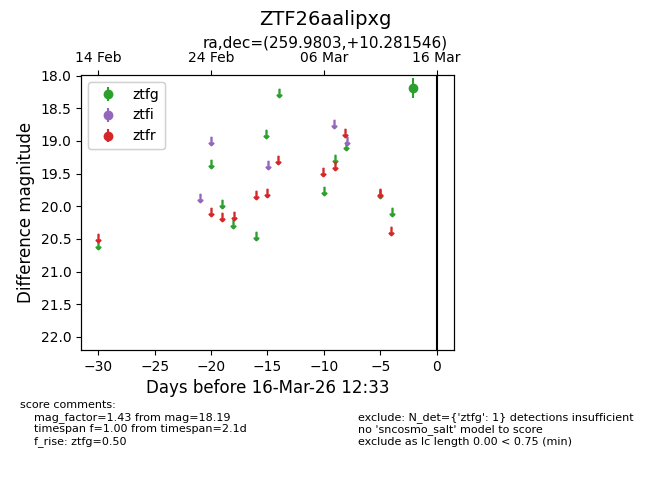
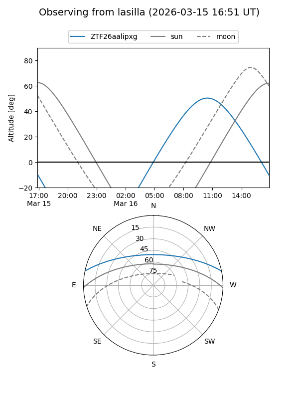
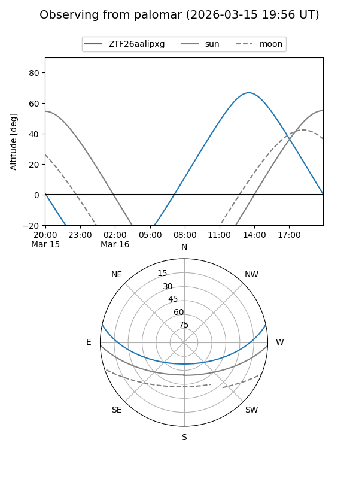

ZTF26aalipxg
Target ZTF26aalipxg at 2026-03-16 12:35
Aliases and brokers:
FINK: link
Lasair: link
ALeRCE: link
alt names
ZTF26aalipxg (ztf,fink_ztf)
Coordinates:
equatorial (ra, dec) = 259.9803,+10.28155
equatorial (HMS+DMS) = 17:19:55.28,+10:16:53.57
galactic (l, b) = (31.9470,+24.95130)
Flags:
Photometry:
last ztfg=18.19
1 ztfg detections
Lightcurve

Visibility


Additional plots